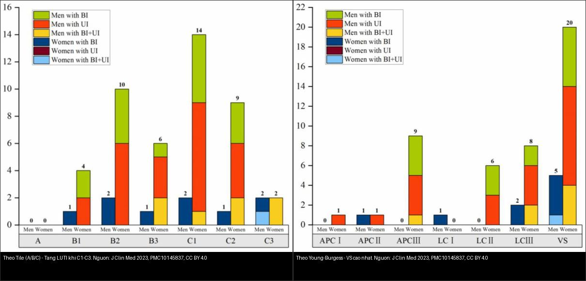
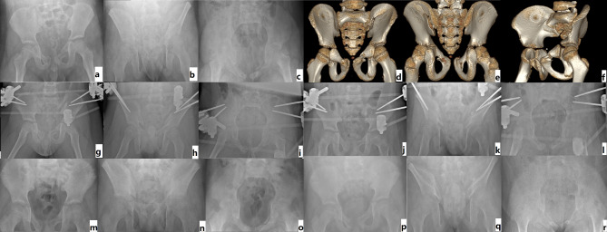
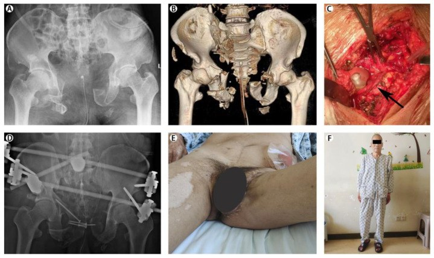
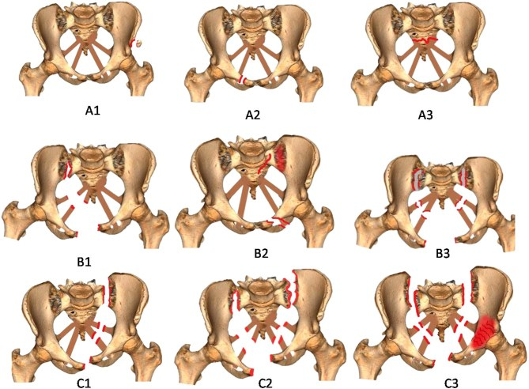

645 — Vỡ khung chậu ở trẻ: phân độ Tile/AO – Young–Burgess, quy tắc chụp ALARA & kiểm soát chảy máu
Tags: pattern:vo-khung-chau pattern:chan-thuong-bung vung:khung-chau-nhi score:Tile-AO score:Young-Burgess score:WSES protocol:CT-bung-chau-can-quang protocol:pelvic-binder protocol:nut-mach
Mức chắc chắn (certainty): tổng hợp y văn (literature synthesis) — nhóm tự biên từ y văn mở (bài tổng quan + loạt ca có số); 3 ca trong quiz là ca nguyên văn (verbatim case) chép đúng tuổi – cơ chế – chú thích gốc.
Câu hỏi gốc của mọi chấn thương khung chậu trẻ: khung chậu có CÒN VỮNG không (Tile A/B hay C), và có MÁU ĐANG CHẢY không? — vì ở trẻ quyết định điều trị theo HUYẾT ĐỘNG, không theo hình ảnh: phần lớn vỡ khung chậu nhi lành bảo tồn, nhưng một thiểu số mất vững/đang chảy máu lại cần đai khung chậu (pelvic binder), cố định ngoài và/hoặc nút mạch trong giờ vàng.
1. Tổng quan — cơ chế & TẠI SAO ảnh hiện như vậy
A. Giải phẫu quyết định hình thái
- Khung chậu = một vòng xương gồm 2 xương chậu (ilium–ischium–pubis) + xương cùng, khóa nhau bằng hệ dây chằng sau (sacroiliac, sacrotuberous, sacrospinous) và khớp mu (symphysis pubis) phía trước. Vòng chỉ vững khi cả cột trước (ngành mu) và cột sau (khớp cùng–chậu + xương cùng) còn nguyên: phá cột sau = mất vững thật.
- TẠI SAO trẻ khác người lớn: xương trẻ nhiều sụn (sụn Y/triradiate, sụn sinh dục–ngồi), đàn hồi cao, màng xương dày → gãy thường ít di lệch, gãy dạng cành tươi (greenstick)/nứt; ngược lại mô mềm và dây chằng yếu hơn xương nên cùng một lực, trẻ dễ tổn thương tạng trong khung chậu hơn (niệu đạo, bàng quang, âm đạo, trực tràng, mạch chậu).
- TẠI SAO chảy máu: nguồn chảy máu theo thứ tự — đám rối tĩnh mạch quanh xương cùng, mặt xương gãy, rồi động mạch (mông trên, thẹn trong, bịt). Vì vậy phần lớn chảy máu là tĩnh mạch → đáp ứng đai khung chậu + hồi sức, chỉ thiểu số do động mạch → cần nút mạch.
B. TẠI SAO X-quang/CT thấy được — vật lý đậm độ
- X-quang khung chậu (AP, inlet, outlet): inlet (chếch chậu vào) thấy di lệch trước–sau, outlet (chếch ra) thấy di lệch dọc. Tổn thương cột sau dễ bị bỏ sót trên X-quang vì chồng chập xương cùng và quai ruột.
- CT cản quang: là tiêu chuẩn vàng vì xương chậu có nhiều mảnh mỏng chồng chập. Đọc 3 thứ: (1) tái tạo 3D định hình ổ gãy, (2) mặt cắt axial phát hiện máu tụ và đường gãy sau, (3) thì động mạch tìm thoát mạch hoạt tính (active extravasation). Vật lý đậm độ: máu tụ cấp 45–70 HU; thuốc cản quang trong lòng mạch 250–400 HU; thoát mạch hoạt tính > 90 HU, tăng và lan rộng ở thì muộn — khác cục máu tụ "sentinel clot" (45–70 HU, đậm hơn máu xung quanh nhưng KHÔNG lớn thêm).
- Trẻ em + ALARA: vì mô mềm/niệu đạo nhạy tia và cần giảm liều, chỉ chụp CT khung chậu khi có cơ chế năng lượng cao/đau khu trú/không đi được/kèm đái máu; trẻ huyết động ổn định và nghi ngờ thấp có thể dùng X-quang trước (Cano JR et al., EFORT Open Rev 2024, PMC11099580).
C. Ngưỡng định lượng cần nhớ
- Dịch tễ nhi: vỡ khung chậu chỉ chiếm ~2,0% tổng số gãy xương ở trẻ (so với ~3,9% ở người lớn); cơ chế chủ yếu tai nạn giao thông 82,3%, ngã cao 14,6%, thể thao 3,1% (Zhang H et al., BMC Pediatr 2025, PMC12057021).
- Tử vong vỡ khung chậu dao động rộng 10% → tới 50% khi huyết động không ổn định (số liệu người lớn; ở trẻ thấp hơn nhưng vẫn tử vong vì tổn thương kèm, không vì bản thân xương).
- Trong loạt 96 trẻ (Tile B 47 ca, Tile C 49 ca, tuổi trung bình 95,7 ± 50,3 tháng): Matta sau cố định ngoài tốt–rất tốt 91,7%; lành xương 8,6 ± 1,1 tuần; kết quả chức năng Cole tốt–rất tốt 83,3%; 16/96 (16,7%) nhiễm trùng chân đinh (pin site), 4 ca mổ lại vì di lệch dụng cụ (PMC12057021).
- Yếu tố tiên lượng xấu (hồi quy đa biến): Tile C (so với B) và sụn Y đã đóng/một phần tương quan mạnh với điểm chức năng xấu hơn; di lệch sau mổ còn lớn tương quan mạnh nhất (r = 0,672, p < 0,001) (PMC12057021).
- Giãn khớp mu (symphyseal diastasis) ≥ 2,5 cm trên X-quang = mất vững cột trước (tương ứng APC II trở lên). Matta: di lệch tối đa ≤ 4 mm = rất tốt, 5–10 mm = tốt, 10–20 mm = trung bình, > 20 mm = kém.
- Tổn thương tiết niệu dưới (LUTI) gặp 7,7% (54/698) ca vỡ khung chậu; nam gấp 2,4 lần nữ; đứt niệu đạo rõ ở nam (6,1% vs 0,5%, p = 0,001) nhưng vỡ bàng quang gần như tương đương hai giới (4,5% vs 4,4%, p = 0,966); phân loại Tile C và Young–Burgess thể thẳng đứng (VS) có tỉ lệ LUTI cao nhất (Zhao X et al., J Clin Med 2023, PMC10145837).
2. Mẫu hình + chẩn đoán phân biệt theo cơ chế (gamut)
Gamut theo phân loại Tile/AO (nền tảng tư duy):
- Tile A: gãy không phá vòng (ngành mu, cánh chậu, gãy ngang cùng) — vững cả xoay và dọc.
- Tile B: mất vững xoay, còn vững dọc — B1 "mở sách" (open book, APC), B2 "ép bên" (lateral compression, LC), B3 hai bên.
- Tile C: mất vững cả xoay và dọc — C1 một bên, C2 hai bên, C3 kèm gãy ổ cối; nhóm nặng nhất, tổn thương mạch/tạng nhiều nhất.
Gamut theo cơ chế Young–Burgess:
- APC (ép trước–sau, "mở sách"): I (giãn mu < 2,5 cm), II (giãn > 2,5 cm, mở khớp cùng–chậu trước), III (mở cả sau = mất vững hoàn toàn) → nguy cơ chảy máu lớn nhất.
- LC (ép bên): I (gãy ngành mu), II (kèm cánh chậu "cánh hoa" — bucket-handle), III ("windswept", kèm mất vững dọc đối bên).
- VS (thẳng đứng/lực cắt): di lệch dọc — hay kèm đứt niệu đạo, thần kinh, mạch.
- CM (kết hợp): phối hợp cơ chế.
Gamut lâm sàng theo huyết động (chốt hành động):
- Vững/ổn định (Tile A, phần lớn B) → bảo tồn, tập vận động sớm.
- Mất vững nhưng đã kiểm soát (đai + hồi sức) → cố định ngoài (trẻ ưu tiên cố định ngoài hơn mổ mở vì xương còn sụn).
- Đang chảy máu/không ổn định → hồi sức máu + đai + chụp mạch nút mạch; nếu vẫn chảy → đóng gói chậu (pelvic packing)/kiểm soát tổn thương.
Gamut "vỡ khung chậu mở" (open pelvic fracture) — đáy chậu/hậu môn–trực tràng/âm đạo thông với ngoài: nguy cơ nhiễm trùng huyết và tử vong cao — xem bài 643.
3. Bảng so sánh phân biệt (ma trận đối chiếu)
| Thực thể (entity) | Hình ảnh điển hình | Chốt vào (rule-in) | Chốt loại (rule-out) | Gợi ý xác nhận |
|---|---|---|---|---|
| Tile A – vững | Gãy ngành mu/cánh chậu đơn thuần; vòng sau nguyên | Chỉ cột trước gãy, vòng sau + khớp mu nguyên | Có bất kỳ tổn thương cột sau → không còn là A | X-quang AP + CT; điều trị bảo tồn |
| Tile B – mất vững xoay | "Mở sách" (giãn mu) hoặc "ép bên" (cánh hoa); cột sau còn vững dọc | Giãn mu ≥ 2,5 cm hoặc cánh chậu gãy, KHÔNG di lệch dọc | Di lệch dọc/xương cùng gãy → Tile C | CT 3D; đai khung chậu |
| Tile C – mất vững xoay + dọc | Gãy cột sau (khớp cùng–chậu/xương cùng) + di lệch dọc nửa khung chậu | Di lệch dọc trên inlet/outlet + phá vỡ dây chằng sau | Chỉ giãn mu đơn thuần, cột sau nguyên → Tile B | CT 3D + inlet/outlet; cân nhắc nút mạch |
| Vỡ khung chậu KÍN vs MỞ | Mở = có vết thương thông với đáy chậu/âm đạo/trực tràng | Thông thương với ngoài (đáy chậu/hậu môn/âm đạo) | Da nguyên vẹn, không thông → kín | Khám đáy chậu/âm đạo/trực tràng; phân độ WSES |
| Chảy máu TĨNH MẠCH (đa số) vs ĐỘNG MẠCH | Máu tụ lan tỏa quanh chậu, không có ổ thuốc | Máu tụ 45–70 HU, không thấy thoát mạch | Thoát mạch > 90 HU, lớn dần thì muộn → động mạch | CT thì ĐM; DSA nút mạch |
| Vỡ khung chậu kèm tổn thương tiết niệu dưới | Đái máu, máu ở lỗ sáo, không tiểu được | Tile C/VS + máu lỗ sáo/đái máu | Không đái máu, tiểu được → ít nghĩ | CT cystography/RUG (637) |
| Tổn thương đáy chậu – sinh dục ngoài | Máu tụ âm hộ, rách âm đạo, máu tụ "cánh bướm" | Vết thương/máu tụ đáy chậu + vỡ khung chậu | Chỉ bầm da, không máu tụ sâu | Khám dưới gây mê + CT/CTA (643) |

Trái: phân bố tổn thương bàng quang (BI) và niệu đạo (UI) theo Tile — tăng dần từ A → C1–C3. Phải: theo Young–Burgess — cao nhất ở VS (thẳng đứng) rồi APC III và LC III. Nguồn: Zhao X et al., J Clin Med 2023 (PMC10145837), CC BY 4.0. Ảnh ghép letterbox, giữ tỉ lệ.4. Protocol chụp + hệ phân độ/điểm chuẩn hóa
Chuỗi hành động cấp cứu (theo ATLS + EFORT 2024, PMC11099580):
- Đai khung chậu (pelvic binder) đặt càng sớm càng tốt, kể cả trước viện, ngay khi nghi chấn thương kín năng lượng cao — không phụ thuộc cơ chế. Đai che mất di lệch trên phim → phải mô tả "chụp khi có đai" và nới đai có kiểm soát khi chụp để đánh giá.
- X-quang AP/inlet/outlet khi huyết động ổn định và nghi ngờ thấp; CT toàn thân cản quang khi nghi chảy máu/đa chấn thương (thì ĐM + TM + muộn). CT là chìa khóa phát hiện thoát mạch.
- Cố định ngoài (external fixation) là phương pháp ưu tiên ở gãy HỞ và gãy kín khi chưa định mổ trong; C-clamp cho vòng sau. Ở trẻ, chân đinh Schanz 3,0–4,0 mm (dùng 3,0 mm nếu bề rộng cánh chậu < 5 mm) (PMC12057021).
- Nút mạch (TAE) khi CT có thoát mạch hoạt tính hoặc bệnh nhân không ổn định dù đã đai + hồi sức. Nguồn thường gặp: động mạch mông trên, thẹn trong, bịt (xem 920).
Phân độ Tile/AO — 3 nhóm (ảnh minh họa bên dưới):
| Nhóm | Cơ chế mất vững | Ổn định |
|---|---|---|
| A | Không phá vòng chậu | Vững xoay + dọc |
| B | Mất vững xoay, còn vững dọc | B1 mở sách / B2 ép bên / B3 hai bên |
| C | Mất vững xoay + dọc | C1 một bên / C2 hai bên / C3 + ổ cối |
Phân độ WSES cho vỡ khung chậu MỞ (Li PH et al., World J Emerg Surg 2022, PMC9145531 — n = 830): nhẹ 3,5% · trung bình 11,2% · nặng 23,8% tử vong; có nhiễm trùng huyết làm tử vong tăng rõ rệt → thêm yếu tố sepsis vào phân độ.
Phân vùng chấn thương khung chậu mở (Wang ZH & Li KN, Orthop Surg 2019, PMC6904613 — n = 67, tử vong 41,8%): type I đáy chậu, type II bẹn–chậu (ilioinguinal), type III cùng–chậu (sacroiliac), type IV phối hợp — vùng đáy chậu (type I) hay kèm tổn thương hậu môn–trực tràng/âm đạo/niệu đạo.
flowchart TD
A["Trẻ chấn thương năng lượng cao, nghi vỡ khung chậu"] --> B["ATLS: chảy máu? đai khung chậu SỚM"]
B --> C{"Huyết động ổn định?"}
C -->|"Không"| D["Hồi sức máu + đai; nghi thoát mạch → CT thì ĐM"]
C -->|"Có"| E["X-quang AP/inlet/outlet (nghi ngờ thấp) hoặc CT toàn thân"]
D --> F{"CT: có thoát mạch hoạt tính (>90 HU, lớn dần)?"}
E --> F
F -->|"Có"| G["Chụp mạch NÚT MẠCH (TAE)"]
F -->|"Không"| H{"Còn mất vững?"}
G --> H
H -->|"Không (Tile A/B đơn thuần)"| I["Bảo tồn + tập sớm"]
H -->|"Có (Tile B/C)"| J["Cố định ngoài ± C-clamp; Tile C + traction"]
J --> K{"Vỡ HỞ / tổn thương đáy chậu?"}
K -->|"Có"| L["Làm sạch + kháng sinh + colostomy nếu cần (WSES)"]
K -->|"Không"| M["Theo dõi, X-quang 3–5 ngày"]
L --> M
5. Biến thể bình thường và cạm bẫy
- Sụn Y (triradiate) và sụn sinh dục–ngồi chưa đóng giả "đường gãy" — đọc theo tuổi xương (Risser, đóng sụn Y) trước khi gọi gãy; ngược lại gãy nứt/cành tươi ở trẻ dễ bị đọc là bình thường vì ít di lệch.
- X-quang bỏ sót cột sau: xương cùng và khớp cùng–chậu bị quai ruột/xương chồng → gãy xương cùng/khớp cùng–chậu thường chỉ thấy trên CT. Đừng loại trừ Tile C chỉ vì X-quang "trông ổn".
- Đai khung chậu che di lệch: binder đóng vòng chậu → giãn mu biến mất trên phim (Cano, PMC11099580). Luôn ghi rõ "có/không đai" khi chụp.
- Thỏa mãn tìm kiếm (satisfaction of search): đã thấy gãy ngành mu rồi dừng → bỏ sót vỡ bàng quang/đứt niệu đạo (bài 637), chấn thương đáy chậu (bài 643), tổn thương tạng đặc (bài 140, 624).
- "Gãy ngành mu đơn thuần" ở trẻ không hề nhẹ: ở trẻ, xương đàn hồi nên một gãy ngành mu có thể phản ánh lực rất lớn → luôn tìm tổn thương nội tạng kèm.
- Thoát mạch hoạt tính vs cục máu tụ "sentinel clot": cả hai đều tăng đậm độ; chốt bằng độ đậm (thoát mạch > 90 HU) + lớn dần/lan rộng ở thì muộn; sentinel clot 45–70 HU, giữ nguyên.
- Bỏ sót "khung chậu mở": thăm khám đáy chậu/âm đạo/trực tràng bắt buộc — vết thương nhỏ ở đáy chậu có thể thông vào ổ gãy và gây nhiễm trùng huyết chết người.
6. Tự lượng giá — Blind Quiz (ảnh trơn ngoài, đáp án ẩn trong khối chi tiết)
Ca 1 — Bé trai 8 tuổi, tai nạn giao thông. Nhìn ảnh, mô tả tổn thương trước khi mở đáp án.

- Gợi ý lâm sàng: đa chấn thương do tai nạn giao thông.
- Câu hỏi: Đây là tổn thương một bên hay hai bên, cột trước hay sau? Phân loại Tile nào? Xử trí ưu tiên?
Bấm để hiện đáp án (findings + chẩn đoán)
- (a–c) X-quang AP/outlet/inlet và (d–f) CT 3D: gãy vòng sau một bên (Tile C-II) + gãy hai bên vòng trước; có di lệch dọc (thấy rõ trên outlet/inlet).
- Phân loại: Tile C-II (mất vững xoay + dọc) — nhóm nặng, nguy cơ tổn thương mạch/tạng cao.
- Xử trí: đai khung chậu sớm + hồi sức; cố định ngoài + kéo chi cho mất vững dọc (loạt gốc kéo trung bình 9,3 tuần); theo dõi X-quang 3–5 ngày; nếu CT có thoát mạch → nút mạch.
- Nguồn ảnh: Zhang H et al., BMC Pediatr 2025 (PMC12057021), Fig 1, CC BY-NC-ND 4.0 (giữ nguyên bản, không chỉnh sửa).
Ca 2 — Ảnh ghép đối chiếu: hai hệ phân loại "nói" cùng một điều gì về nguy cơ tổn thương tiết niệu? Gọi tên hệ trái và hệ phải.
- Câu hỏi: Cột nào có nguy cơ tổn thương tiết niệu dưới cao nhất trong mỗi hệ? Vì sao?
Bấm để hiện đáp án (findings + chẩn đoán)
- Trái (Tile): số ca LUTI tăng dần A → B → C — đỉnh ở C1 (14 ca); Tile C (mất vững xoay + dọc) nguy cơ cao nhất.
- Phải (Young–Burgess): đỉnh ở VS (thẳng đứng, 20 ca) rồi APC III và LC III; lực thẳng đứng gây di lệch dọc → hay đứt niệu đạo/mạch.
- Chốt: càng mất vững (Tile C / VS) càng nhiều tổn thương tiết niệu dưới; đứt niệu đạo nghiêng về nam, vỡ bàng quang gần như tương đương hai giới.
- Nguồn ảnh: Zhao X et al., J Clin Med 2023 (PMC10145837), Fig 2 + Fig 3, CC BY 4.0. Ảnh ghép letterbox.
Ca 3 — Người lớn (đối chiếu): vỡ khung chậu Tile C kèm tổn thương tiết niệu dưới. Panel nào cho thấy cố định ngoài, panel nào là ảnh trong mổ?

- Câu hỏi: Mô tả (A)–(F). Cơ chế nào (Tile/YB) hay kèm tổn thương này?
Bấm để hiện đáp án (findings + chẩn đoán)
- (A) X-quang khung chậu AP: gãy mất vững; (B) CT 3D; (C) ảnh trong mổ thấy bàng quang (có ống thông); (D) X-quang sau cố định ngoài; (E) đáy chậu phù nề; (F) bệnh nhân hậu phẫu.
- Chốt: Tile C + Young–Burgess VS là tổ hợp hay kèm tổn thương tiết niệu dưới — luôn đánh giá niệu đạo/bàng quang (bài 637).
- Nguồn ảnh: Zhao X et al., J Clin Med 2023 (PMC10145837), Fig 1, CC BY 4.0.
Ca 4 — Sơ đồ phân độ: hai sơ đồ bên dưới mô tả gì, dùng khi nào?


- Câu hỏi: Sơ đồ 1 phân loại theo vùng giải phẫu hay theo cơ chế lực? Vùng nào (type I) hay kèm tổn thương hậu môn–trực tràng/âm đạo?
Bấm để hiện đáp án (findings + chẩn đoán)
- Sơ đồ 1 (khung chậu mở): phân loại theo vùng giải phẫu — type I đáy chậu (khung trắng), type II bẹn–chậu (khung đỏ), type III cùng–chậu (khung xanh). Type I (đáy chậu) hay kèm tổn thương hậu môn–trực tràng/âm đạo/niệu đạo; loạt 67 ca tử vong 41,8%.
- Sơ đồ 2: phân loại Tile/AO theo cơ chế mất vững (A/B/C).
- Nguồn ảnh: Wang ZH & Li KN, Orthop Surg 2019 (PMC6904613), Fig 1, CC BY 4.0; Cano JR et al., EFORT Open Rev 2024 (PMC11099580), Fig 4, CC BY-NC 4.0 (giữ nguyên bản).
Bài liên quan chéo
- 600 – Tổng quan Hệ Nhi khoa
- 643 – Chấn thương đáy chậu – sinh dục ngoài ở trẻ (vỡ khung chậu mở + tổn thương đáy chậu/âm đạo/trực tràng)
- 637 – Chấn thương bàng quang & niệu đạo nhi (đứt niệu đạo sau do vỡ khung chậu)
- 636 – Cấp cứu niệu–sinh dục nhi (chấn thương thận AAST, xoắn)
- 623 – Chấn thương tụy–tá tràng ở trẻ / 624 – Chấn thương gan & đường mật nhi (cùng cơ chế tay lái)
- 140 – Lách & chấn thương tạng đặc (AAST tạng đặc, thoát mạch vs sentinel clot)
- 320 – Gãy & trật khớp cấp cứu / 321 – Gãy trẻ em (Salter–Harris)
- 920 – Nút mạch trong chảy máu (nguyên lý TAE)
Ảnh
- Tên file:
NNN_slug_Modality_SourceID.jpg. Chi tiết nguồn + giấy phép từng ảnh:images/CREDITS.mdvàsources.md. - Ảnh CC BY 4.0 (PMC10145837, PMC6904613) và CC BY-NC/CC BY-NC-ND (PMC11099580, PMC12057021) — ảnh CC BY-NC/ND giữ nguyên bản, không crop/ghép; ảnh ghép đối chiếu chỉ dùng nguồn CC BY 4.0, tạo bằng
tools/make_composite.py(letterbox, giữ tỉ lệ).
Không dùng để chẩn đoán độc lập khi chưa có người hướng dẫn.